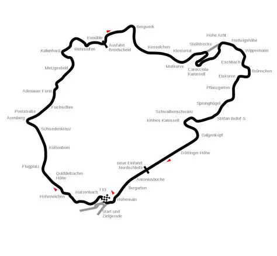

Nordschleife: 20,8 km de respeito
A pista conhecida como Green Hell combina alta velocidade, elevação agressiva e mais de 150 curvas. Um laboratório real para pilotos e equipes.
A pista conhecida como Green Hell combina alta velocidade, elevação agressiva e mais de 150 curvas. Um laboratório real para pilotos e equipes.

| Piloto | Carro | Volta | Ano |
|---|

Foque em Flugplatz, Schwedenkreuz e Karussell para consistência. A diferença está em frear cedo no primeiro stint e guardar pneu para o final.

Traçado base para referência visual rápida de setores e pontos de frenagem.